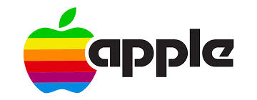

Un Estudio Comparativo de la Autenticidad de Marca
La narrativa de Google frente a la percepción del usuario y los desafíos de Apple.
Análisis de Google: La Marca Favorita
La identidad de Google se construye sobre una misión clara y una narrativa centrada en la utilidad y la innovación.
"Organizar la información del mundo para que sea útil y accesible para todos."
Percepción del Consumidor: Google
Los usuarios perciben a Google como una herramienta indispensable, pero hay una brecha entre la narrativa y la realidad operativa.
- **Utilidad:** Es una solución fundamental para problemas cotidianos.
- **Frustración:** Falta de soporte al cliente y problemas de privacidad debido al modelo de negocio de publicidad.
Análisis de Apple: La Marca No Favorita
Apple se posiciona como una marca de lujo, vendiendo un estilo de vida y una "sensación de lujo" a través de la perfección.
"Ser los mejores, no los primeros."

Percepción del Consumidor: Apple
Hay una fuerte lealtad aspiracional, pero también una decepción cuando la realidad contradice la promesa de perfección.
- **Lealtad:** Calidad, larga vida útil y un ecosistema integrado difícil de abandonar.
- **Decepción:** Precios premium, políticas de reparación restrictivas y fallos de hardware/software.
Caso de Estudio: La Caja de Herramientas de Elena
La historia de una restauradora que busca herramientas de calidad ilustra cómo la autenticidad de una marca resuena con los valores del cliente.
Conclusión
La autenticidad no es un adjetivo, sino un verbo: es la **acción continua** de alinear las promesas de la marca con la realidad de la experiencia del consumidor.
"La narrativa más poderosa y auténtica es la reputación, forjada por la suma de todas las experiencias."